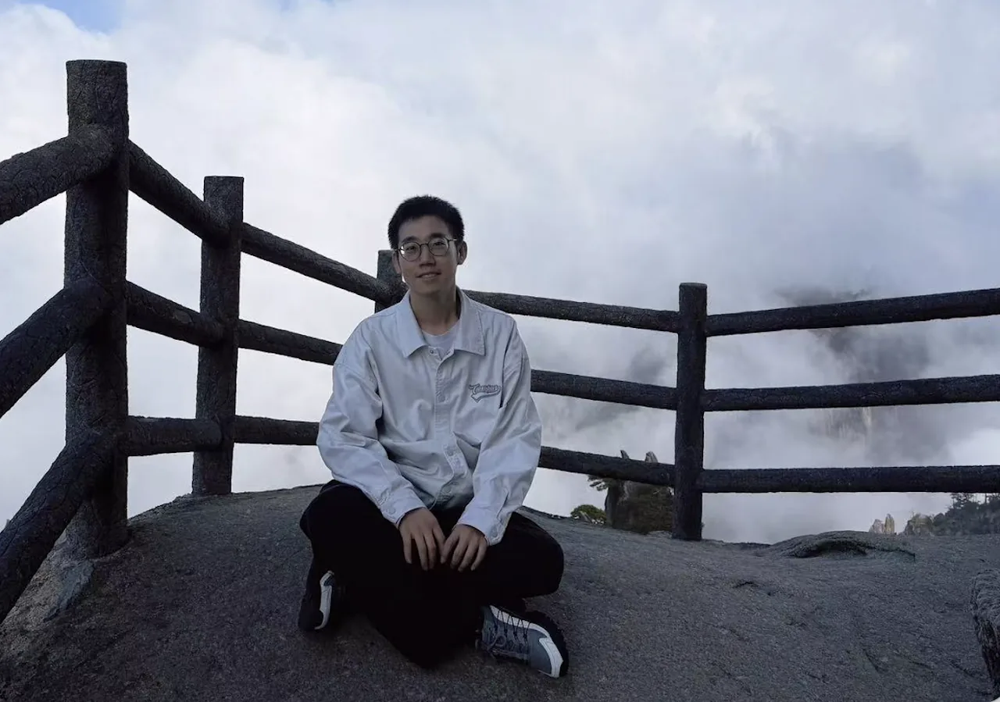

About me
- I am currently a research professor at School of Mathematical Sciences of East China Normal University (since March 2026).
- I was a Senior Researcher at Center for Complex Geometry of Institute for Basic Science (IBS-CCG) in the Republic of Korea from December 2024 to February 2026. Before that, I was a Postdoctoral Research Fellow there from January 2022 to November 2024.
- I received my Ph.D. from National University of Singapore under the supervision of De-Qi Zhang in October 2021. Prior to that, I got my B.Sc. from East China Normal University in June 2017.
- I am working on complex algebraic geometry and its interaction with dynamics. Here is my CV.
- Email: glzhong[AT]math.ecnu.edu.cn, zhongguolei[AT]u.nus.edu (to contact me, please replace [AT] with @)
- Phone: +86 021-54342646-621
- Current address: Room 221, Stat. Building, 500 Dongchuan Road, Minhang District, Shanghai, China.
